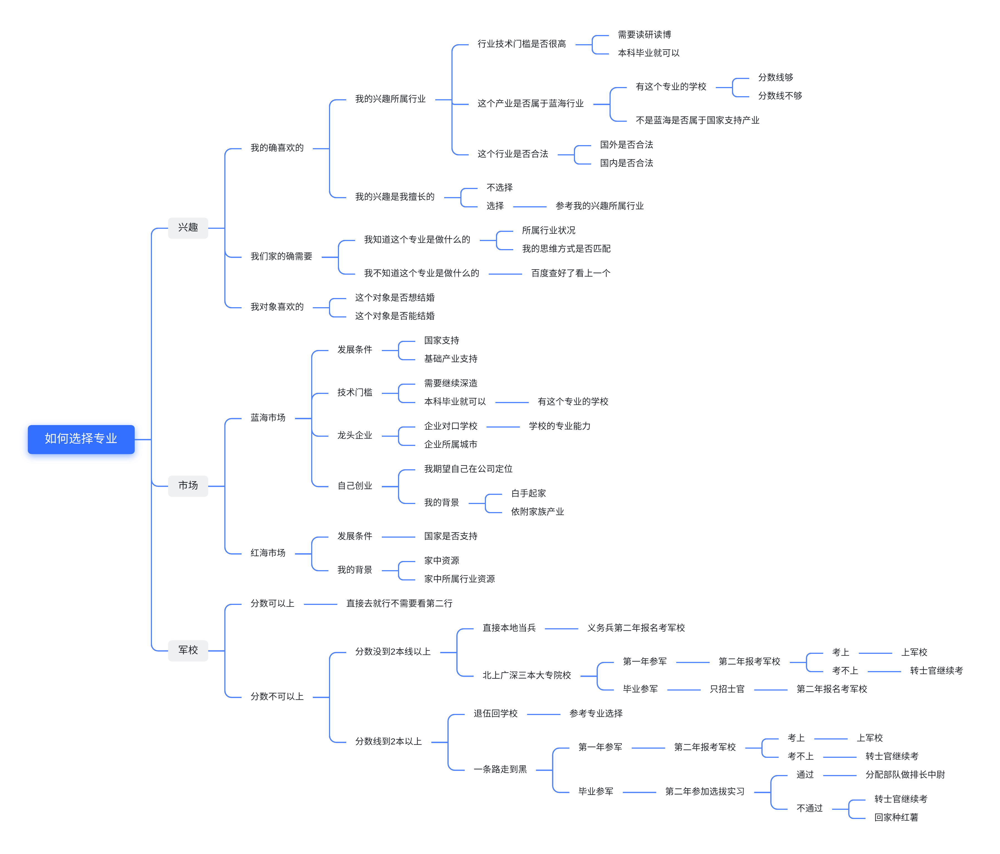

序
写在前面
开发者须知
声明
入学之前
学校介绍
如何选择专业
填志愿指南
入学指南
第0天 欢迎来到上海电力大学
入学准备
买什么
带什么
衣食住行の学校
交通
宿舍
陷阱与机遇
学长的被子
插班生
笔能不能买
信用卡
驾校
学生部门
上电通讯社
社团
5分熟
选(抢)课
怎样提高抢课概率
教务选课规则
如何选择（好）课程
本科专业学习指北
英语-20级学姐建议
网络工程-18级学姐建议
自动化学院的全栈养成-19级测控学长建议
转专业指北
21级光电信息转智能科学与技术
20级材料化学转电气及其自动化专业
米其林(食堂)指南
临港
小卖部
一食堂
二食堂
(薛定谔的)三食堂（学校TODO）
外卖
杨浦
三好堂
周边
外卖
嗨皮指南
临港
港城新天地
看日出⏰
老生入门
考(应)试技巧
绩点有什么用
过线
高分
刷绩点
奖学金
考研指南
22届-西电-网络空间安全经验
16级-同济-物理考研经验
出国指南
就业指南
总论
内推互助TODO
考公TODO
电网TODO
陷阱TODO
Published with HonKit
如何选择专业
专业选择
专业选择请参考下图 
同时经过统计，部分同学仅将自己分数与最相近的专业相匹配，请注意，高分专业不一定是适合自己的专业，请进行更多调研和综合考虑
results matching "
"
No results matching "
"